Lecciones de circuitos eléctricos - Volumen II
Capítulo 7
SEÑALES DE CA DE FRECUENCIA MIXTA
- Introduction
- Square wave signals
- Other waveshapes
- More on spectrum analysis
- Circuit effects
- Contributors
Introduction
En nuestro estudio de circuitos de CA hasta ahora, hemos explorado circuitos alimentados por una forma de onda de voltaje sinusoidal de frecuencia única. Sin embargo, en muchas aplicaciones de la electrónica, las señales de frecuencia única son la excepción y no la regla. Muy a menudo podemos encontrar circuitos donde coexisten múltiples frecuencias de voltaje simultáneamente. Además, las formas de onda de los circuitos pueden tener formas distintas a las de onda sinusoidal, en cuyo caso las llamamosformas de onda no sinusoidales.
Además, podemos encontrar situaciones en las que CC se mezcla con CA: donde una forma de onda se superpone a una señal constante (CC). El resultado de tal mezcla es una señal que varía en intensidad, pero que nunca cambia de polaridad, o cambia la polaridad de manera asimétrica (pasando más tiempo en positivo que en negativo, por ejemplo). Dado que la CC no alterna como lo hace la CA, se dice que su “frecuencia” es cero, y cualquier señal que contenga CC junto con una señal de intensidad variable (CA) también puede denominarse con razón señal de frecuencia mixta. En cualquiera de estos casos en los que hay una mezcla de frecuencias en un mismo circuito, el análisis es más complejo de lo que hemos visto hasta ahora.
A veces, las señales de tensión y corriente de frecuencia mixta se crean accidentalmente. Esto puede ser el resultado de conexiones no deseadas entre circuitos, llamadasenganche-- posible gracias a la capacitancia parásita y/o inductancia entre los conductores de esos circuitos. Un ejemplo clásico de fenómeno de acoplamiento se ve con frecuencia en la industria donde el cableado de señal de CC se coloca muy cerca del cableado de alimentación de CA. La presencia cercana de altos voltajes y corrientes de CA puede causar que voltajes “extraños” queden impresos a lo largo del cableado de señal. La capacitancia parásita formada por el aislamiento eléctrico que separa los conductores de energía de los conductores de señal puede causar que el voltaje (con respecto a la tierra) de los conductores de energía se imprima sobre los conductores de señal, mientras que la inductancia parásita formada por tendidos paralelos de alambre en el conducto puede causar que la corriente de los conductores de energía induzca voltaje electromagnéticamente a lo largo de los conductores de señal. El resultado es una mezcla de CC y CA en la carga de señal. El siguiente esquema muestra cómo una fuente de "ruido" de CA puede "acoplarse" a un circuito de CC a través de una inductancia mutua (Mextraviado) y capacitancia (Cextraviado) a lo largo de la longitud de los conductores. (Cifra below)
{kind=link}
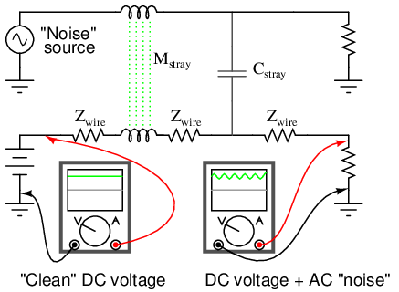
La inductancia parásita y la capacitancia acoplan la CA parásita a la señal de CC deseada.
Cuando los voltajes de CA perdidos de una fuente de “ruido” se mezclan con señales de CC conducidas a lo largo del cableado de señales, los resultados generalmente no son deseables. Por esta razón, el cableado de alimentación y el cableado de señal de bajo nivel debensiempredeben enrutarse a través de conductos metálicos separados y dedicados, y las señales deben conducirse a través de un cable de “par trenzado” de 2 conductores en lugar de a través de un solo cable y conexión a tierra: (Figura below)
{kind=link}
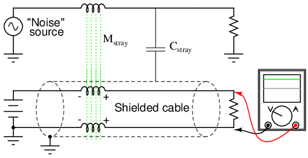
El par trenzado blindado minimiza el ruido.
El blindaje del cable puesto a tierra, una trenza de alambre o una lámina metálica envuelta alrededor de los dos conductores aislados, aísla ambos conductores del acoplamiento electrostático (capacitivo) al bloquear cualquier campo eléctrico externo, mientras que la proximidad paralela de los dos conductores cancela efectivamente cualquier acoplamiento electromagnético (mutuamente inductivo) porque cualquier voltaje de ruido inducido será aproximadamente igual en magnitud y opuesto en fase a lo largo de ambos conductores, anulándose entre sí en el extremo receptor para un voltaje de ruido neto (diferencial) de casi cero. Las marcas de polaridad colocadas cerca de cada porción inductiva de la longitud del conductor de señal muestran cómo los voltajes inducidos se escalonan de tal manera que se cancelan entre sí.
El acoplamiento también puede ocurrir entre dos conjuntos de conductores que transportan señales de CA, en cuyo caso ambas señales pueden “mezclarse” entre sí: (Figura below)
{kind=link}
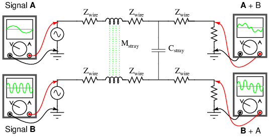
Acoplamiento de señales AC entre conductores paralelos.
El acoplamiento es sólo un ejemplo de cómo pueden mezclarse señales de diferentes frecuencias. Ya sea que se trate de CA mezclada con CC o de dos señales de CA que se mezclan entre sí, el acoplamiento de señales mediante inductancia parásita y capacitancia suele ser accidental y no deseado. En otros casos, las señales de frecuencia mixta son el resultado de un diseño intencional o pueden ser una cualidad intrínseca de una señal. Generalmente es bastante fácil crear fuentes de señales de frecuencia mixta. Quizás la forma más sencilla sea simplemente conectar fuentes de voltaje en serie: (Figura below)
{kind=link}
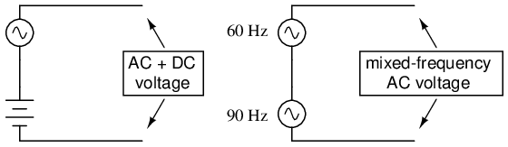
La conexión en serie de fuentes de voltaje mezcla señales.
Algunas redes de comunicaciones informáticas funcionan según el principio de superponer señales de tensión de alta frecuencia a lo largo de conductores de líneas eléctricas de 60 Hz, a fin de transmitir datos informáticos a lo largo de tramos de cableado eléctrico existentes. Esta técnica se ha utilizado durante años en redes de distribución de energía eléctrica para comunicar datos de carga a lo largo de líneas eléctricas de alta tensión. Ciertamente, estos son ejemplos de voltajes CA de frecuencia mixta, bajo condiciones que se establecen deliberadamente.
En algunos casos, las señales de frecuencia mixta pueden ser producidas por una única fuente de voltaje. Tal es el caso de los micrófonos, que convierten las ondas de presión del aire de audiofrecuencia en las correspondientes formas de onda de voltaje. La mezcla particular de frecuencias en la señal de voltaje emitida por el micrófono depende del sonido que se reproduce. Si las ondas sonoras consisten en una sola nota o tono puro, la forma de onda de voltaje también será una onda sinusoidal de una sola frecuencia. Si la onda de sonido es un acorde u otra armonía de varias notas, la forma de onda de voltaje resultante producida por el micrófono consistirá en esas frecuencias mezcladas. Muy pocos sonidos naturales consisten en vibraciones de ondas sinusoidales puras y únicas, sino que son una mezcla de vibraciones de diferentes frecuencias con diferentes amplitudes.
Musicalacordesse producen combinando una frecuencia con otras frecuencias de múltiplos fraccionarios particulares de la primera. Sin embargo, investigando un poco más, encontramos que incluso una sola nota de piano (producida por una cuerda pulsada) consta de una frecuencia predominante mezclada con varias otras frecuencias, siendo cada frecuencia un múltiplo entero de la primera (llamadaarmonía, mientras que la primera frecuencia se llamafundamental). Una ilustración de estos términos se muestra en la tabla belowcon una frecuencia fundamental de 1000 Hz (una cifra arbitraria elegida para este ejemplo).
For a “base” frequency of 1000 Hz:
| Frecuencia (Hz) | Término |
|---|---|
| 1000 | 1st harmonic, or fundamental |
| 2000 | 2nd harmonic |
| 3000 | 3rd harmonic |
| 4000 | 4th harmonic |
| 5000 | 5th harmonic |
| 6000 | 6th harmonic |
| 7000 | 7th harmonic |
A veces, el término "armónico" se utiliza para describir la frecuencia armónica producida por un instrumento musical. El “primer” armónico es la primera frecuencia armónica.más quelo fundamental. Si tuviéramos un instrumento que produjera todo el rango de frecuencias armónicas que se muestra en la tabla anterior, el primer armónico sería de 2000 Hz (el segundo armónico), mientras que el segundo armónico sería de 3000 Hz (el tercer armónico), etc. Sin embargo, esta aplicación del término "armónico" es específica de instrumentos particulares.
Sucede que ciertos instrumentos son incapaces de producir ciertos tipos de frecuencias armónicas. Por ejemplo, un instrumento hecho de un tubo que está abierto por un extremo y cerrado por el otro (como una botella, que produce sonido cuando se sopla aire a través de la abertura) es incapaz de producir armónicos pares. Un instrumento de este tipo configurado para producir una frecuencia fundamental de 1000 Hz también produciría frecuencias de 3000 Hz, 5000 Hz, 7000 Hz, etc., peronotproduce 2000 Hz, 4000 Hz, 6000 Hz o cualquier otra frecuencia par-múltiplo de la fundamental. Como tal, diríamos que el primer armónico (la primera frecuencia mayor que la fundamental) en dicho instrumento sería de 3000 Hz (el tercer armónico), mientras que el segundo armónico sería de 5000 Hz (el quinto armónico), y así sucesivamente.
Una onda sinusoidal pura (frecuencia única), al estar completamente desprovista de armónicos, suena muy "plana" y "sin características especiales" para el oído humano. La mayoría de los instrumentos musicales son incapaces de producir sonidos tan simples. Lo que le da a cada instrumento su tono distintivo es el mismo fenómeno que le da a cada persona una voz distintiva: la combinación única de formas de onda armónicas con cada nota fundamental, descrita por la física del movimiento para cada objeto único que produce el sonido.
Los instrumentos de metal no poseen el mismo "contenido armónico" que los instrumentos de viento y tampoco producen el mismo contenido armónico que los instrumentos de cuerda. Una combinación distintiva de frecuencias es lo que le da a un instrumento musical su tono característico. Como podrá comprobar cualquiera que haya tocado la guitarra, las cuerdas de acero tienen un sonido diferente al de las cuerdas de nailon. Además, el tono producido por una cuerda de guitarra cambia dependiendo del lugar a lo largo de su longitud que se puntee. Estas diferencias de tono también son el resultado de diferentes contenidos armónicos producidos por diferencias en las vibraciones mecánicas de las partes de un instrumento. Todos estos instrumentos producen frecuencias armónicas (múltiplos de números enteros de la frecuencia fundamental) cuando se toca una sola nota, pero las amplitudes relativas de esas frecuencias armónicas son diferentes para diferentes instrumentos. En términos musicales, la medida del contenido armónico de un tono se llamatimbre or color.
Los tonos musicales se vuelven aún más complejos cuando el elemento resonante de un instrumento es una superficie bidimensional en lugar de una cuerda unidimensional. Los instrumentos basados en la vibración de una cuerda (guitarra, piano, banjo, laúd, dulcimer, etc.) o de una columna de aire en un tubo (trompeta, flauta, clarinete, tuba, órgano de tubos, etc.) suelen producir sonidos compuestos por una única frecuencia (la “fundamental”) y una mezcla de armónicos. Sin embargo, los instrumentos basados en la vibración de una placa plana (tambores de acero y algunos tipos de campanas) producen una gama mucho más amplia de frecuencias, que no se limita a múltiplos de números enteros de la fundamental. The result is a distinctive tone that some people find acoustically offensive.
Como puede ver, la música proporciona un rico campo de estudio para las frecuencias mixtas y sus efectos. Secciones posteriores de este capítulo se referirán a los instrumentos musicales como fuentes de formas de onda para un análisis más detallado.
- REVISAR:
- A sinusoidalLa forma de onda tiene la forma exacta de una onda sinusoidal.
- A no sinusoidalLa forma de onda puede ser cualquier cosa, desde una forma de onda sinusoidal distorsionada hasta algo completamente diferente como una onda cuadrada.
- Las formas de onda de frecuencia mixta pueden crearse accidentalmente, crearse intencionalmente o simplemente existir por necesidad. La mayoría de los tonos musicales, por ejemplo, no están compuestos de una única onda sinusoidal, sino que son ricas mezclas de diferentes frecuencias.
- Cuando se mezclan varias formas de onda sinusoidal (como suele ser el caso en la música), la onda sinusoidal de menor frecuencia se denomina onda sinusoidal.fundamental, y las otras ondas sinusoidales cuyas frecuencias son múltiplos de números enteros de la onda fundamental se denominanarmonía.
- An armónicoes un armónico producido por un dispositivo en particular. El “primer” sobretono es la primera frecuencia mayor que la fundamental, mientras que el “segundo” sobretono es la siguiente frecuencia mayor producida. Los sobretonos sucesivos pueden corresponder o no a armónicos incrementales, dependiendo del dispositivo que produzca las frecuencias mezcladas. Algunos dispositivos y sistemas no permiten el establecimiento de ciertos armónicos, por lo que sus armónicos solo incluirían algunas (no todas) frecuencias armónicas.
Square wave signals
Se ha encontrado queanyLa forma de onda repetitiva no sinusoidal se puede equiparar a una combinación de voltaje CC, ondas sinusoidales y/o ondas coseno (ondas sinusoidales con un cambio de fase de 90 grados) en diversas amplitudes y frecuencias. Esto es cierto sin importar cuán extraña o complicada pueda ser la forma de onda en cuestión. Mientras se repita regularmente en el tiempo, es reducible a esta serie de ondas sinusoidales. En particular, se ha descubierto que las ondas cuadradas son matemáticamente equivalentes a la suma de una onda sinusoidal a esa misma frecuencia, más una serie infinita de ondas sinusoidales de frecuencia impar-múltiple con amplitud decreciente:
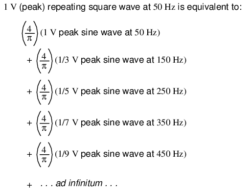
Esta verdad sobre las formas de onda al principio puede parecer demasiado extraña para creerla. Sin embargo, si una onda cuadrada es en realidad una serie infinita de armónicos de onda sinusoidal sumados, es lógico que podamos demostrarlo sumando varios armónicos de onda sinusoidal para producir una aproximación cercana de una onda cuadrada. Este razonamiento no sólo es sólido, sino que se demuestra fácilmente con SPICE.
El circuito que simularemos no es más que varias fuentes de voltaje CA de onda sinusoidal de las amplitudes y frecuencias adecuadas conectadas en serie. Usaremos SPICE para trazar las formas de onda de voltaje a través de adiciones sucesivas de fuentes de voltaje, como esta: (Figura below)
{kind=link}
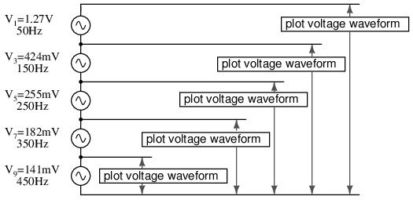
Una onda cuadrada se aproxima por la suma de armónicos.
En esta simulación particular de SPICE, he sumado las fuentes de voltaje armónico 1.°, 3.°, 5.°, 7.° y 9.° en serie para un total de cinco fuentes de voltaje de CA. La frecuencia fundamental es 50 Hz y cada armónico es, por supuesto, un múltiplo entero de esa frecuencia. Las cifras de amplitud (voltaje) no son números aleatorios; más bien, se llegó a ellos a través de las ecuaciones que se muestran en la serie de frecuencias (la fracción 4/π multiplicada por 1, 1/3, 1/5, 1/7, etc. para cada uno de los armónicos impares crecientes).
building a squarewave v1 1 0 sin (0 1.27324 50 0 0) 1st harmonic (50 Hz) v3 2 1 sin (0 424.413m 150 0 0) 3rd harmonic v5 3 2 sin (0 254.648m 250 0 0) 5th harmonic v7 4 3 sin (0 181.891m 350 0 0) 7th harmonic v9 5 4 sin (0 141.471m 450 0 0) 9th harmonic r1 5 0 10k .tran 1m 20m .plot tran v(1,0) Plot 1st harmonic .plot tran v(2,0) Plot 1st + 3rd harmonics .plot tran v(3,0) Plot 1st + 3rd + 5th harmonics .plot tran v(4,0) Plot 1st + 3rd + 5th + 7th harmonics .plot tran v(5,0) Plot 1st + . . . + 9th harmonics .end
A partir de aquí narraré el análisis paso a paso, explicando qué es lo que estamos viendo. En este primer gráfico, vemos la onda sinusoidal de frecuencia fundamental de 50 Hz por sí sola. No es más que una forma sinusoidal pura, sin contenido armónico adicional. Este es el tipo de forma de onda producida por una fuente de alimentación de CA ideal: (Figura below)
{kind=link}
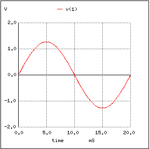
Onda sinusoidal pura de 50 Hz.
A continuación, vemos lo que sucede cuando esta forma de onda limpia y simple se combina con el tercer armónico (tres veces 50 Hz o 150 Hz). De repente, ya no parece una onda sinusoidal limpia: (Figura below)
{kind=link}
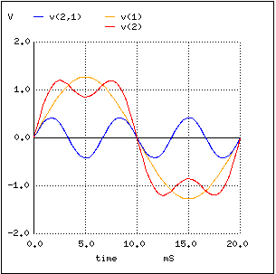
La suma de los armónicos 1.º (50 Hz) y 3.º (150 Hz) se aproxima a una onda cuadrada de 50 Hz.
Los tiempos de subida y bajada entre los ciclos positivos y negativos son mucho más pronunciados ahora, y las crestas de la onda están más cerca de volverse planas como una onda cuadrada. Observe lo que sucede cuando agregamos la siguiente frecuencia armónica impar: (Figura below)
{kind=link}
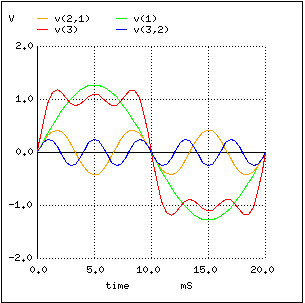
La suma de los armónicos 1.º, 3.º y 5.º se aproxima a la onda cuadrada.
El cambio más notable aquí es cómo las crestas de la ola se han aplanado aún más. Hay más caídas y crestas en cada extremo de la onda, pero esas caídas y crestas tienen una amplitud más pequeña que antes. Observe nuevamente mientras agregamos la siguiente forma de onda armónica impar a la mezcla: (Figura below)
{kind=link}
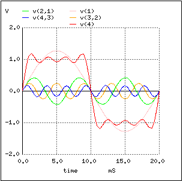
La suma de los armónicos 1.º, 3.º, 5.º y 7.º se aproxima a la onda cuadrada.
Aquí podemos ver la ola volviéndose más plana en cada pico. Finalmente, sumando el noveno armónico, la quinta fuente de voltaje de onda sinusoidal en nuestro circuito, obtenemos este resultado: (Figura below)
{kind=link}
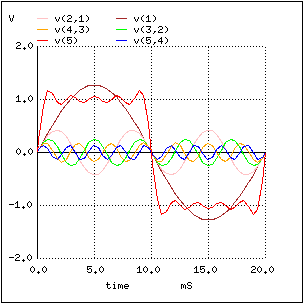
La suma de los armónicos 1.º, 3.º, 5.º, 7.º y 9.º se aproxima a la onda cuadrada.
El resultado final de sumar las primeras cinco formas de onda armónicas impares (todas con las amplitudes adecuadas, por supuesto) es una aproximación cercana a una onda cuadrada. El objetivo de hacer esto es ilustrar cómo podemos construir una onda cuadrada a partir de múltiples ondas sinusoidales en diferentes frecuencias, para demostrar que una onda cuadrada pura es en realidad equivalente a unaseriede ondas sinusoidales. Cuando se aplica un voltaje CA de onda cuadrada a un circuito con componentes reactivos (condensadores e inductores), esos componentes reaccionan como si estuvieran expuestos a varios voltajes de onda sinusoidal de diferentes frecuencias, lo que en realidad es así.
El hecho de que las ondas no sinusoidales repetidas sean equivalentes a una serie definida de voltaje CC aditivo, ondas sinusoidales y/u ondas coseno es una consecuencia de cómo funcionan las ondas: una propiedad fundamental de todos los fenómenos relacionados con las ondas, eléctricos o de otro tipo. El proceso matemático de reducir una onda no sinusoidal a estas frecuencias constituyentes se llamaanálisis de Fourier, cuyos detalles están mucho más allá del alcance de este texto. Sin embargo, se han creado algoritmos informáticos para realizar este análisis a altas velocidades en formas de onda reales, y su aplicación en la calidad de la energía de CA y el análisis de señales está muy extendida.
SPICE tiene la capacidad de muestrear una forma de onda y reducirla a sus armónicos de onda sinusoidal constituyentes mediante unTransformada de Fourieralgoritmo, generando el análisis de frecuencia como una tabla de números. Probemos esto con una onda cuadrada, que ya sabemos que está compuesta de ondas sinusoidales de armónicos impares:
squarewave analysis netlist v1 1 0 pulse (-1 1 0 .1m .1m 10m 20m) r1 1 0 10k .tran 1m 40m .plot tran v(1,0) .four 50 v(1,0) .end
The legumbresopción en la línea netlist que describe la fuente de voltajev1Le indica a SPICE que simule una forma de onda de “pulso” de forma cuadrada, en este caso una que sea simétrica (tiempo igual para cada medio ciclo) y que tenga una amplitud máxima de 1 voltio. Primero trazaremos la onda cuadrada a analizar: (Figura below)
{kind=link}
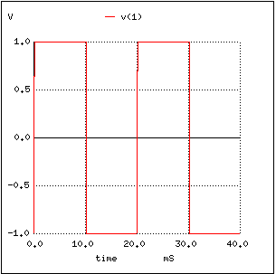
Onda cuadrada para el análisis de SPICE Fourier
A continuación, imprimiremos el análisis de Fourier generado por SPICE para esta onda cuadrada:
fourier components of transient response v(1) dc component = -2.439E-02 harmonic frequency fourier normalized phase normalized no (hz) component component (deg) phase (deg) 1 5.000E+01 1.274E+00 1.000000 -2.195 0.000 2 1.000E+02 4.892E-02 0.038415 -94.390 -92.195 3 1.500E+02 4.253E-01 0.333987 -6.585 -4.390 4 2.000E+02 4.936E-02 0.038757 -98.780 -96.585 5 2.500E+02 2.562E-01 0.201179 -10.976 -8.780 6 3.000E+02 5.010E-02 0.039337 -103.171 -100.976 7 3.500E+02 1.841E-01 0.144549 -15.366 -13.171 8 4.000E+02 5.116E-02 0.040175 -107.561 -105.366 9 4.500E+02 1.443E-01 0.113316 -19.756 -17.561 total harmonic distortion = 43.805747 percent
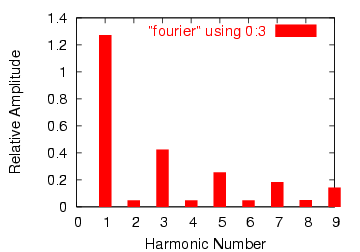
Gráfico de resultados del análisis de Fourier.
Aquí, (Figura above) SPICE ha dividido la forma de onda en un espectro de frecuencias sinusoidales hasta el noveno armónico, más un pequeño voltaje de CC etiquetadoComponente CC. Tuve que informar a SPICE de la frecuencia fundamental (para una onda cuadrada con un período de 20 milisegundos, esta frecuencia es de 50 Hz), para que supiera clasificar los armónicos. Observe cuán pequeñas son las cifras para todos los armónicos pares (2.°, 4.°, 6.°, 8.°) y cómo las amplitudes de los armónicos impares disminuyen (el 1.° es el más grande, el 9.° es el más pequeño).
{kind=link}
Esta misma técnica de “Transformación de Fourier” se utiliza a menudo en instrumentación de potencia computarizada, muestreando las formas de onda de CA y determinando el contenido armónico de las mismas. Un algoritmo informático común (secuencia de pasos del programa para realizar una tarea) para esto es elTransformada rápida de Fourier or FFTfunción. No es necesario preocuparse por cómo funcionan exactamente estas rutinas informáticas, pero sí ser consciente de su existencia y aplicación.
Esta misma técnica matemática utilizada en SPICE para analizar el contenido armónico de las ondas se puede aplicar al análisis técnico de la música: descomponer cualquier sonido particular en sus frecuencias de onda sinusoidal constituyentes. De hecho, es posible que ya hayas visto un dispositivo diseñado para hacer justamente eso sin darte cuenta de lo que era. Aecualizador gráficoes una pieza de equipo estéreo de alta fidelidad que controla (y a veces muestra) la naturaleza del contenido armónico de la música. Equipado con varios mandos o palancas deslizantes, el ecualizador es capaz de atenuar (reducir) selectivamente la amplitud de determinadas frecuencias presentes en la música, para “personalizar” el sonido en beneficio del oyente. Por lo general, habrá una pantalla de "gráfico de barras" al lado de cada palanca de control, que muestra la amplitud de cada frecuencia en particular. (Cifra below)
{kind=link}
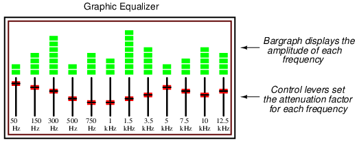
Ecualizador gráfico de audio de alta fidelidad.
Un dispositivo construido estrictamente para mostrar (no controlar) las amplitudes de cada rango de frecuencia para una señal de frecuencia mixta generalmente se denominaanalizador de espectro. El diseño de analizadores de espectro puede ser tan simple como un conjunto de circuitos de “filtro” (consulte el siguiente capítulo para obtener más detalles) diseñados para separar las diferentes frecuencias entre sí, o tan complejo como una computadora digital de propósito especial que ejecuta un algoritmo FFT para dividir matemáticamente la señal en sus componentes armónicos. Los analizadores de espectro suelen estar diseñados para analizar señales de frecuencia extremadamente alta, como las producidas por transmisores de radio y hardware de redes informáticas. En esa forma, a menudo tienen una apariencia similar a la de un osciloscopio: (Figura below)
{kind=link}
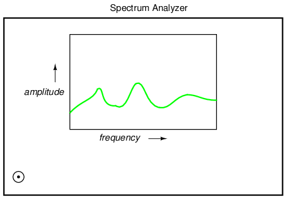
El analizador de espectro muestra la amplitud en función de la frecuencia.
Al igual que un osciloscopio, el analizador de espectro utiliza un CRT (o una pantalla de computadora que imita un CRT) para mostrar un gráfico de la señal. A diferencia de un osciloscopio, este gráfico tiene una amplitud superior afrecuenciaen lugar de amplitud sobretiempo. En esencia, un analizador de frecuencia le proporciona al operador un diagrama de Bode de la señal: algo que un ingeniero podría llamar diagrama de Bode.dominio de frecuenciaen lugar de undominio del tiempoanálisis.
El término "dominio" es matemático: una palabra sofisticada para describir el eje horizontal de un gráfico. Por lo tanto, el gráfico de amplitud (vertical) sobre el tiempo (horizontal) de un osciloscopio es un análisis de “dominio de tiempo”, mientras que el gráfico de amplitud (vertical) sobre frecuencia (horizontal) de un analizador de espectro es un análisis de “dominio de frecuencia”. Cuando usamos SPICE para trazar la amplitud de la señal (ya sea voltaje o amplitud de corriente) en un rango de frecuencias, estamos realizandodominio de frecuenciaanálisis.
Tome nota de que el análisis de Fourier de la última simulación de SPICE no es "perfecto". Idealmente, las amplitudes de todos los armónicos pares deberían ser absolutamente cero, al igual que el componente de CC. Nuevamente, esto no es tanto una peculiaridad de SPICE sino una propiedad de las formas de onda en general. Una forma de onda de duración infinita (número infinito de ciclos) se puede analizar con absoluta precisión, pero cuantos menos ciclos tenga la computadora para su análisis, menos preciso será el análisis. Sólo cuando tenemos una ecuación que describe una forma de onda en su totalidad, el análisis de Fourier puede reducirla a una serie definida de formas de onda sinusoidales. Cuantas menos veces cicla una onda, menos segura es su frecuencia. Llevando este concepto a su extremo lógico, un pulso corto (una forma de onda que ni siquiera completa un ciclo) en realidadno tiene frecuencia, sino que actúa como un rango infinito de frecuencias. Este principio es común aallfenómenos basados en ondas, no sólo voltajes y corrientes alternas.
Baste decir que el número de ciclos y la certeza de los componentes de frecuencia de una forma de onda están directamente relacionados. Podríamos mejorar la precisión de nuestro análisis aquí dejando que la onda oscile una y otra vez durante muchos ciclos, y el resultado sería un análisis del espectro más consistente con el ideal. En el siguiente análisis, omití el gráfico de forma de onda por motivos de brevedad; es solo una onda cuadrada muy larga:
squarewave v1 1 0 pulse (-1 1 0 .1m .1m 10m 20m) r1 1 0 10k .option limpts=1001 .tran 1m 1 .plot tran v(1,0) .four 50 v(1,0) .end
fourier components of transient response v(1) dc component = 9.999E-03 harmonic frequency fourier normalized phase normalized no (hz) component component (deg) phase (deg) 1 5.000E+01 1.273E+00 1.000000 -1.800 0.000 2 1.000E+02 1.999E-02 0.015704 86.382 88.182 3 1.500E+02 4.238E-01 0.332897 -5.400 -3.600 4 2.000E+02 1.997E-02 0.015688 82.764 84.564 5 2.500E+02 2.536E-01 0.199215 -9.000 -7.200 6 3.000E+02 1.994E-02 0.015663 79.146 80.946 7 3.500E+02 1.804E-01 0.141737 -12.600 -10.800 8 4.000E+02 1.989E-02 0.015627 75.529 77.329 9 4.500E+02 1.396E-01 0.109662 -16.199 -14.399
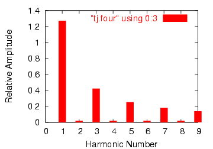
Análisis de Fourier mejorado.
Observe cómo este análisis (Figura above) muestra menos voltaje de componente CC y amplitudes más bajas para cada una de las ondas sinusoidales de frecuencia armónica par, todo porque dejamos que la computadora muestree más ciclos de la onda. Una vez más, la imprecisión del primer análisis no es tanto un defecto de SPICE sino una propiedad fundamental de las ondas y del análisis de señales.
{kind=link}
- REVISAR:
- Las ondas cuadradas son equivalentes a una onda sinusoidal en la misma frecuencia (fundamental) agregada a una serie infinita de armónicos de ondas sinusoidales impares o múltiples con amplitudes decrecientes.
- Existen algoritmos informáticos que pueden muestrear formas de onda y determinar sus componentes sinusoidales constituyentes. ElTransformada de Fourieralgoritmo (particularmente elTransformada rápida de Fourier, oFFT) se utiliza comúnmente en programas de simulación de circuitos informáticos como SPICE y en equipos de medición electrónica para determinar la calidad de la energía.
Other waveshapes
Por extraño que parezca,anyLa forma de onda repetida y no sinusoidal es en realidad equivalente a una serie de formas de onda sinusoidales de diferentes amplitudes y frecuencias sumadas. Las ondas cuadradas son un caso muy común y bien comprendido, pero no el único.
Dispositivos electrónicos de control de potencia, como transistores y rectificadores controlados por silicio (SCR) a menudo producen formas de onda de voltaje y corriente que son esencialmente versiones fragmentadas de la CA de onda sinusoidal que de otro modo sería “limpia” (pura) de la fuente de alimentación. Estos dispositivos tienen la capacidad de de repentecambiarsu resistencia con la aplicación de un voltaje o corriente de señal de control, “encendiendo” o “apagando” así casi instantáneamente, produciendo formas de onda de corriente que se parecen poco a la forma de onda de voltaje de la fuente que alimenta el circuito. Estas formas de onda de corriente luego producen cambios en la forma de onda de voltaje a otros componentes del circuito, debido a las caídas de voltaje creadas por la corriente no sinusoidal a través de las impedancias del circuito.
Los componentes del circuito que distorsionan la forma de onda sinusoidal normal del voltaje o corriente CA se denominanno lineal. Los componentes no lineales como los SCR encuentran un uso popular en la electrónica de potencia debido a su capacidad para regular grandes cantidades de energía eléctrica sin disipar mucho calor. Si bien esto es una ventaja desde la perspectiva de la eficiencia energética, las distorsiones de la forma de onda que introducen pueden causar problemas.
Estas formas de onda no sinusoidales, independientemente de su forma real, son equivalentes a una serie de formas de onda sinusoidales de frecuencias (armónicas) más altas. Si el diseñador del circuito no las tiene en cuenta, estas formas de onda armónicas creadas por los componentes de conmutación electrónicos pueden causar un comportamiento errático del circuito. Cada vez es más común en la industria de la energía eléctrica observar el sobrecalentamiento de transformadores y motores debido a distorsiones en la forma de onda sinusoidal del voltaje de la línea de alimentación de CA derivadas de cargas "conmutadas" como computadoras y luces de alta eficiencia. Éste no es un ejercicio teórico: es muy real y potencialmente muy problemático.
En esta sección, investigaré algunas de las formas de onda más comunes y mostraré sus componentes armónicos mediante análisis de Fourier utilizando SPICE.
Una forma muy común en que se generan armónicos en un sistema de energía de CA es cuando la CA se convierte o “rectifica” en CC. Esto generalmente se hace con componentes llamadosdiodos, que sólo permiten el paso de la corriente en una dirección. El tipo más simple de rectificación CA/CC esmedia onda, donde un solo diodo bloquea la mitad de la corriente CA (con el tiempo) para que no pase a través de la carga. (Cifra below) Curiosamente, el símbolo esquemático del diodo convencional se dibuja de manera que los electrones fluyancontrala dirección de la punta de flecha del símbolo:
{kind=link}
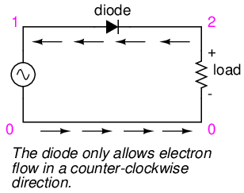
Rectificador de media onda.
halfwave rectifier v1 1 0 sin(0 15 60 0 0) rload 2 0 10k d1 1 2 mod1 .model mod1 d .tran .5m 17m .plot tran v(1,0) v(2,0) .four 60 v(1,0) v(2,0) .end halfwave rectifier
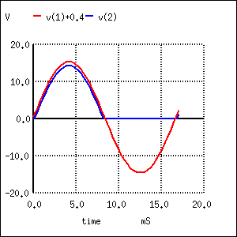
Formas de onda del rectificador de media onda. V(1)+0.4 desplaza la entrada de onda sinusoidal V(1) hacia arriba para mayor claridad. Esto no es parte de la simulación.
Primero, veremos cómo SPICE analiza la forma de onda fuente, un voltaje de onda sinusoidal pura: (Figura below)
{kind=link}
fourier components of transient response v(1) dc component = 8.016E-04 harmonic frequency fourier normalized phase normalized no (hz) component component (deg) phase (deg) 1 6.000E+01 1.482E+01 1.000000 -0.005 0.000 2 1.200E+02 2.492E-03 0.000168 -104.347 -104.342 3 1.800E+02 6.465E-04 0.000044 -86.663 -86.658 4 2.400E+02 1.132E-03 0.000076 -61.324 -61.319 5 3.000E+02 1.185E-03 0.000080 -70.091 -70.086 6 3.600E+02 1.092E-03 0.000074 -63.607 -63.602 7 4.200E+02 1.220E-03 0.000082 -56.288 -56.283 8 4.800E+02 1.354E-03 0.000091 -54.669 -54.664 9 5.400E+02 1.467E-03 0.000099 -52.660 -52.655
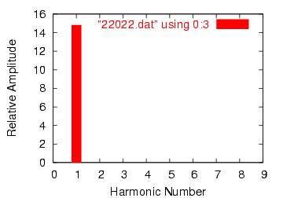
Análisis de Fourier de la entrada de onda sinusoidal.
Observe los componentes armónicos y de CC extremadamente pequeños de esta forma de onda sinusoidal en la tabla anterior, aunque son demasiado pequeños para mostrarlos en el gráfico armónico anterior. Idealmente, no se mostraría nada más que la frecuencia fundamental (siendo una onda sinusoidal perfecta), pero nuestras cifras de análisis de Fourier no son perfectas porque SPICE no puede darse el lujo de muestrear una forma de onda de duración infinita. A continuación, compararemos esto con el análisis de Fourier del voltaje "rectificado" de media onda a través de la resistencia de carga: (Figura below)
{kind=link}
fourier components of transient response v(2) dc component = 4.456E+00 harmonic frequency fourier normalized phase normalized no (hz) component component (deg) phase (deg) 1 6.000E+01 7.000E+00 1.000000 -0.195 0.000 2 1.200E+02 3.016E+00 0.430849 -89.765 -89.570 3 1.800E+02 1.206E-01 0.017223 -168.005 -167.810 4 2.400E+02 5.149E-01 0.073556 -87.295 -87.100 5 3.000E+02 6.382E-02 0.009117 -152.790 -152.595 6 3.600E+02 1.727E-01 0.024676 -79.362 -79.167 7 4.200E+02 4.492E-02 0.006417 -132.420 -132.224 8 4.800E+02 7.493E-02 0.010703 -61.479 -61.284 9 5.400E+02 4.051E-02 0.005787 -115.085 -114.889
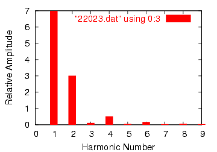
Salida de media onda del análisis de Fourier.
Observe los armónicos pares-múltiples relativamente grandes en este análisis. Al cortar la mitad de nuestra onda de CA, hemos introducido en nuestro circuito el equivalente de varias formas de onda sinusoidales (en realidad, coseno) de mayor frecuencia a partir de la onda sinusoidal pura original. Tenga en cuenta también el gran componente de CC: 4,456 voltios. Debido a que nuestra forma de onda de voltaje de CA ha sido "rectificada" (solo se le permite empujar en una dirección a través de la carga en lugar de hacia adelante y hacia atrás), se comporta mucho más como CC.
Otro método de conversión CA/CC se llamaonda completa(Cifra below), que como habrás adivinado utiliza el ciclo completo de energía CA de la fuente, invirtiendo la polaridad de la mitad del ciclo CA para hacer que los electrones fluyan a través de la carga en la misma dirección todo el tiempo.No los aburriré con detalles de cómo se hace esto exactamente, pero podemos examinar la forma de onda (Figura below) y su análisis armónico a través de SPICE: (Figura below)
{kind=link}
{kind=link}
{kind=link}
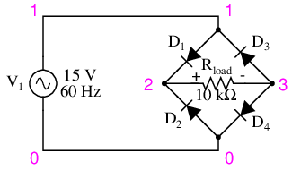
Circuito rectificador de onda completa.
fullwave bridge rectifier v1 1 0 sin(0 15 60 0 0) rload 2 3 10k d1 1 2 mod1 d2 0 2 mod1 d3 3 1 mod1 d4 3 0 mod1 .model mod1 d .tran .5m 17m .plot tran v(1,0) v(2,3) .four 60 v(2,3) .end
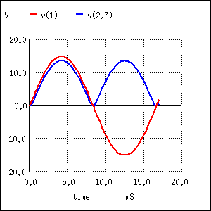
Formas de onda para rectificador de onda completa
fourier components of transient response v(2,3) dc component = 8.273E+00 harmonic frequency fourier normalized phase normalized no (hz) component component (deg) phase (deg) 1 6.000E+01 7.000E-02 1.000000 -93.519 0.000 2 1.200E+02 5.997E+00 85.669415 -90.230 3.289 3 1.800E+02 7.241E-02 1.034465 -93.787 -0.267 4 2.400E+02 1.013E+00 14.465161 -92.492 1.027 5 3.000E+02 7.364E-02 1.052023 -95.026 -1.507 6 3.600E+02 3.337E-01 4.767350 -100.271 -6.752 7 4.200E+02 7.496E-02 1.070827 -94.023 -0.504 8 4.800E+02 1.404E-01 2.006043 -118.839 -25.319 9 5.400E+02 7.457E-02 1.065240 -90.907 2.612
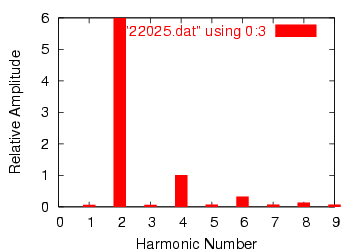
Análisis de Fourier de la salida de un rectificador de onda completa.
¡Qué diferencia! Según la transformada de Fourier de SPICE, tenemos un segundo componente armónico en esta forma de onda que es más de 85 veces la amplitud de la frecuencia de la fuente de CA original. El componente de CC de esta onda aparece como 8,273 voltios (casi el doble de lo que era para el circuito rectificador de media onda), mientras que el segundo armónico tiene una amplitud de casi 6 voltios. Observe todos los demás armónicos más abajo en la tabla. Los armónicos impares son en realidad más fuertes en algunas de las frecuencias más altas que en las frecuencias más bajas, lo cual es interesante.
Como puede ver, lo que puede comenzar como una onda sinusoidal de CA simple y ordenada puede terminar como un complejo lío de armónicos después de pasar por unos pocos componentes electrónicos. Si bien las complejas matemáticas detrás de toda esta transformación de Fourier no son necesarias para que el estudiante principiante de circuitos eléctricos las comprenda, es de suma importancia comprender los principios en funcionamiento y comprender los efectos prácticos que las señales armónicas pueden tener en los circuitos. Los efectos prácticos de las frecuencias armónicas en los circuitos se explorarán en la última sección de este capítulo, pero antes de hacerlo veremos más de cerca las formas de onda y sus respectivos armónicos.
- REVISAR:
- AnyCualquier forma de onda, siempre que sea repetitiva, puede reducirse a una serie de formas de onda sinusoidales sumadas. Las diferentes formas de onda constan de diferentes combinaciones de armónicos de onda sinusoidal.
- La rectificación de CA a CC es una fuente muy común de armónicos dentro de los sistemas de energía industriales.
More on spectrum analysis
Análisis computarizado de Fourier, particularmente en forma deFFTalgoritmo, es una herramienta poderosa para mejorar nuestra comprensión de las formas de onda y sus componentes espectrales relacionados. Esta misma rutina matemática programada en el simulador SPICE como la.fourierLa opción también está programada en una variedad de instrumentos de prueba electrónicos para realizar análisis de Fourier en tiempo real en señales medidas. Esta sección está dedicada al uso de dichas herramientas y al análisis de varias formas de onda diferentes.
Primero tenemos una onda sinusoidal simple a una frecuencia de 523,25 Hz. Este valor de frecuencia particular es un tono de “C” en el teclado de un piano, una octava por encima del “C medio”. En realidad, la señal medida para esta demostración fue creada por un teclado electrónico configurado para producir el tono de una flauta de pan, la “voz” de instrumento más cercana que pude encontrar y que se asemeja a una onda sinusoidal perfecta. El siguiente gráfico se tomó de la pantalla de un osciloscopio y muestra la amplitud de la señal (voltaje) a lo largo del tiempo: (Figura below)
{kind=link}
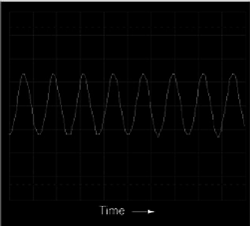
Visualización del osciloscopio: voltaje vs tiempo.
Vista con un osciloscopio, una onda sinusoidal parece una curva ondulada trazada horizontalmente en la pantalla. El eje horizontal de la pantalla de este osciloscopio está marcado con la palabra "Tiempo" y una flecha que apunta en la dirección de la progresión del tiempo. La curva en sí, por supuesto, representa el aumento y disminución cíclico del voltaje a lo largo del tiempo.
Una observación minuciosa revela imperfecciones en la forma de la onda sinusoidal. Desafortunadamente, esto es el resultado del equipo específico utilizado para analizar la forma de onda. Características como éstas debidas a peculiaridades del equipo de prueba se conocen técnicamente comoartefactos: fenómeno que existe únicamente debido a una peculiaridad del equipo utilizado para realizar el experimento.
Si observamos este mismo voltaje CA en un analizador de espectro, el resultado es bastante diferente: (Figura below)
{kind=link}
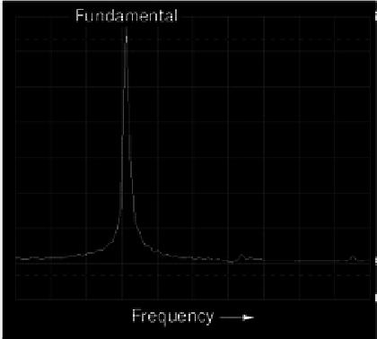
Display del analizador de espectro: tensión vs frecuencia.
Como puede ver, el eje horizontal de la pantalla está marcado con la palabra "Frecuencia", que indica el dominio de esta medición. El pico único en la curva representa el predominio de una sola frecuencia dentro del rango de frecuencias cubiertas por el ancho de la pantalla. Si la escala de este instrumento analizador estuviera marcada con números, vería que este pico se produce a 523,25 Hz. La altura del pico representa la amplitud de la señal (voltaje).
Si mezclamos tres tonos de onda sinusoidal diferentes en el teclado electrónico (C-E-G, un acorde de do mayor) y medimos el resultado, tanto la pantalla del osciloscopio como la pantalla del analizador de espectro reflejan esta mayor complejidad: (Figura below)
{kind=link}
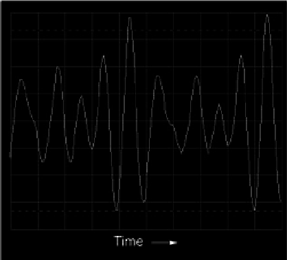
Pantalla Oscilloscape: tres tonos.
La pantalla del osciloscopio (dominio del tiempo) muestra una forma de onda con muchos más picos y valles que antes, resultado directo de la mezcla de estas tres frecuencias. Como notará, algunos de estos picos son más altos que los picos de la forma de onda original de un solo tono, mientras que otros son más bajos. Esto es el resultado de que las tres formas de onda diferentes se refuerzan y cancelan alternativamente a medida que sus respectivos cambios de fase cambian en el tiempo.
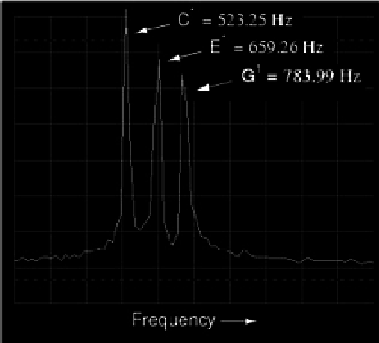
Display del analizador de espectro: tres tonos.
La visualización del espectro (dominio de frecuencia) es mucho más fácil de interpretar: cada tono está representado por su propio pico en la curva. (Cifra above) La diferencia de altura entre estos tres picos es otro artefacto del equipo de prueba: una consecuencia de las limitaciones del equipo utilizado para generar y analizar estas formas de onda, y no una característica necesaria del acorde musical en sí.
{kind=link}
Como se dijo antes, el dispositivo utilizado para generar estas formas de onda es un teclado electrónico: un instrumento musical diseñado para imitar los tonos de muchos instrumentos diferentes. Se eligió la “voz” de flauta de pan para las primeras demostraciones porque se parecía más a una onda sinusoidal pura (una única frecuencia en la pantalla del analizador de espectro). Sin embargo, otras “voces” de instrumentos musicales no son tan simples como ésta. De hecho, el tono único producido poranyinstrumento es función de su forma de onda (o espectro de frecuencias). Por ejemplo, veamos la señal de un tono de trompeta: (Figura below)
{kind=link}
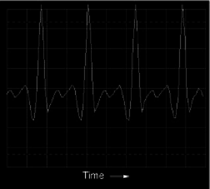
Visualización del osciloscopio: forma de onda de un tono de trompeta.
La frecuencia fundamental de este tono es la misma que en el primer ejemplo de flauta de pan: 523,25 Hz, una octava por encima del "do medio". La forma de onda en sí está lejos de ser una forma de onda sinusoidal pura y simple. Sabiendo que cualquier forma de onda no sinusoidal repetitiva es equivalente a una serie de formas de onda sinusoidales con diferentes amplitudes y frecuencias, deberíamos esperar ver múltiples picos en la pantalla del analizador de espectro: (Figura below)
{kind=link}
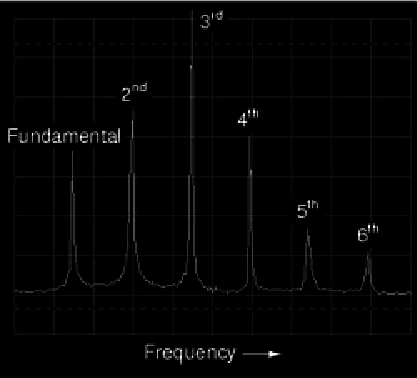
Espectro de un tono de trompeta.
¡De hecho lo hacemos! El componente de frecuencia fundamental de 523,25 Hz está representado por el pico más a la izquierda, con cada armónico sucesivo representado como su propio pico a lo largo del ancho de la pantalla del analizador. El segundo armónico es el doble de la frecuencia de la fundamental (1046,5 Hz), el tercer armónico es el triple de la fundamental (1569,75 Hz), y así sucesivamente. Esta pantalla sólo muestra los primeros seis armónicos, pero hay muchos más que componen este complejo tono.
Al probar una voz de instrumento diferente (el acordeón) en el teclado, obtenemos un gráfico de osciloscopio (dominio del tiempo) igualmente complejo (Figura below) y pantalla del analizador de espectro (dominio de frecuencia): (Figura below)
{kind=link}
{kind=link}
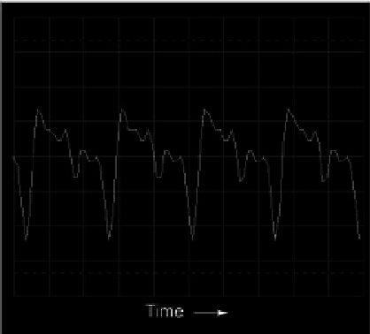
Visualización del osciloscopio: forma de onda del tono de acordeón.
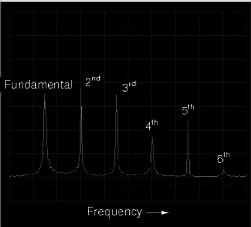
Espectro de tono de acordeón.
Tenga en cuenta las diferencias en las amplitudes armónicas relativas (alturas de pico) en las pantallas de espectro para trompeta y acordeón. Ambos tonos de instrumentos contienen armónicos desde la 1ª (fundamental) hasta la 6ª (¡y más allá!), pero las proporciones no son las mismas. Cada instrumento tiene una “firma” armónica única en su tono. Tengamos en cuenta que toda esta complejidad es en referencia auna sola notatocado con estas dos “voces” de instrumentos. Tocar varias notas en un acordeón, por ejemplo, crearía una mezcla de frecuencias mucho más compleja que la que se ve aquí.
El poder analítico del osciloscopio y del analizador de espectro nos permite derivar reglas generales sobre formas de onda y sus espectros armónicos a partir de ejemplos de formas de onda reales. Ya sabemos que cualquier desviación de una onda sinusoidal pura da como resultado el equivalente a una mezcla de múltiples formas de onda sinusoidales con diferentes amplitudes y frecuencias. Sin embargo, una observación minuciosa nos permite ser más específicos que esto. Tenga en cuenta, por ejemplo, la hora- (Figura below) ydominio de la frecuencia (Figura below) traza una forma de onda que se aproxima a una onda cuadrada:
{kind=link}
{kind=link}
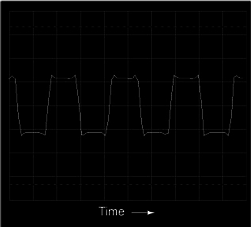
Visualización en el dominio del tiempo del osciloscopio de una onda cuadrada
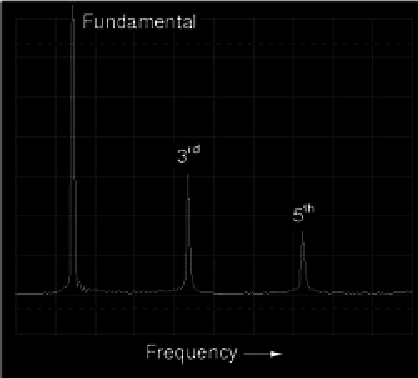
Espectro (dominio de frecuencia) de una onda cuadrada.
Según el análisis del espectro, esta forma de onda contienenoarmónicos pares, solo impares. Aunque esta pantalla no muestra frecuencias posteriores al sexto armónico, el patrón de armónicos impares en amplitud descendente continúa indefinidamente. Esto no debería sorprendernos, ya que ya hemos visto con SPICE que una onda cuadrada se compone de una infinidad de armónicos impares. Los tonos de trompeta y acordeón, sin embargo, conteníanambosarmónicos pares e impares. Esta diferencia en el contenido armónico es digna de mención. Continuaremos nuestra investigación con un análisis de una onda triangular: (Figura below)
{kind=link}
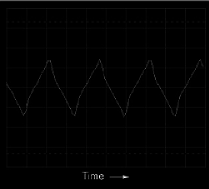
Visualización en el dominio del tiempo del osciloscopio de una onda triangular.
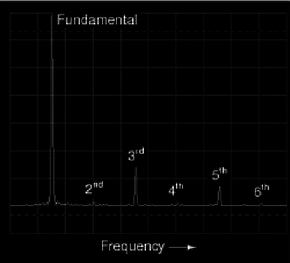
Espectro de una onda triangular.
En esta forma de onda prácticamente no hay armónicos pares: (Figura above) the only significant frequency peaks on the spectrum analyzer display belong to odd-numbered multiples of the fundamental frequency. Se pueden ver pequeños picos para el segundo, cuarto y sexto armónico, pero esto se debe a imperfecciones en esta forma de onda triangular en particular (una vez más, artefactos del equipo de prueba utilizado en este análisis). A perfect triangle waveshape produces no even harmonics, just like a perfect square wave. Al observarlo, debería resultar obvio que el espectro armónico de la onda triangular no es idéntico al espectro de la onda cuadrada: los respectivos picos armónicos tienen diferentes alturas. However, the two different waveforms are common in their lack of even harmonics.
{kind=link}
Examinemos otra forma de onda, ésta muy similar a la onda triangular, excepto que su tiempo de ascenso no es el mismo que su tiempo de caída. conocido como unonda de diente de sierra, su gráfico de osciloscopio revela que tiene un nombre apropiado: (Figura below)
{kind=link}
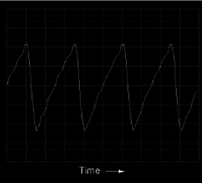
Visualización en el dominio del tiempo de una onda en diente de sierra.
Cuando se traza el análisis espectral de esta forma de onda, vemos un resultado que es bastante diferente al de la onda triangular regular, ya que este análisis muestra la fuerte presencia de armónicos pares (segundo y cuarto): (Figura below)
{kind=link}
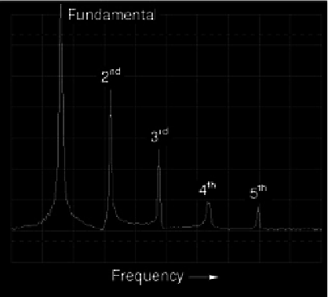
Visualización en el dominio de la frecuencia de una onda en diente de sierra.
La distinción entre una forma de onda que tiene armónicos pares y una que no tiene armónicos pares reside en la diferencia entre una forma de onda triangular y una forma de onda en diente de sierra. Esa diferencia essimetríapor encima y por debajo de la línea central horizontal de la onda. Una forma de onda que sea simétrica por encima y por debajo de su línea central (las formas en ambos lados se reflejan entre sí con precisión) contendránoarmónicos pares. (Cifra below)
{kind=link}

Las formas de onda simétricas con respecto a su línea central del eje x contienen sólo armónicos impares.
Las ondas cuadradas, las ondas triangulares y las ondas sinusoidales puras exhiben esta simetría y todas carecen de armónicos pares. Las formas de onda como el tono de trompeta, el tono de acordeón y la onda de diente de sierra no son simétricas alrededor de sus líneas centrales y, por lo tanto,docontienen armónicos pares. (Cifra below)
{kind=link}

Las formas de onda asimétricas contienen armónicos pares.
Este principio de simetría de línea central no debe confundirse con la simetría alrededor delcerolínea. En los ejemplos mostrados, la línea central horizontal de la forma de onda resulta ser cero voltios en el gráfico en el dominio del tiempo, pero esto no tiene nada que ver con el contenido armónico. Esta regla de contenido armónico (incluso los armónicos sólo con formas de onda asimétricas) se aplica independientemente de que la forma de onda se desplace por encima o por debajo de cero voltios con un "componente de CC". Para mayor aclaración, mostraré los mismos conjuntos de formas de onda, desplazadas con voltaje CC, y observaré que sus contenidos armónicos no cambian. (Cifra below)
{kind=link}
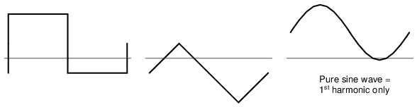
Estas formas de onda se componen exclusivamente de armónicos impares.
Nuevamente, la cantidad de voltaje CC presente en una forma de onda no tiene nada que ver con el contenido de frecuencia armónica de esa forma de onda. (Cifra below)
{kind=link}
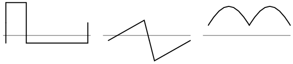
Estas formas de onda contienen armónicos pares.
¿Por qué es importante conocer esta regla general armónica? Puede ayudarnos a comprender la relación entre los armónicos en los circuitos de CA y componentes específicos del circuito. Dado que la mayoría de las fuentes de distorsión de onda sinusoidal en los circuitos de alimentación de CA tienden a ser simétricas, rara vez se observan armónicos pares en esas aplicaciones. Es bueno saberlo si usted es diseñador de sistemas de energía y está planificando con anticipación la reducción de armónicos: solo tiene que preocuparse por mitigar las frecuencias de armónicos impares, ya que los armónicos pares son prácticamente inexistentes. Además, si mide armónicos pares en un circuito de CA con un analizador de espectro o un medidor de frecuencia, sabrá que algo en ese circuito debe serasimétricamentedistorsionar el voltaje o la corriente de la onda sinusoidal, y esa pista puede ser útil para localizar la fuente de un problema (busque componentes o condiciones que tengan más probabilidades de distorsionar un medio ciclo de la forma de onda de CA más que el otro).
Ahora que tenemos esta regla para guiar nuestra interpretación de las formas de onda no sinusoidales, tiene más sentido que una forma de onda como la producida por un circuito rectificador contenga armónicos pares tan fuertes, sin haber ninguna simetría por encima y por debajo del centro.
- REVISAR:
- Las formas de onda que son simétricas por encima y por debajo de sus líneas centrales horizontales no contienen armónicos pares.
- La cantidad de voltaje de “polarización” de CC presente (el “componente de CC” de una forma de onda) no tiene ningún impacto en el contenido de frecuencia armónica de esa onda.
Circuit effects
El principio de que las formas de onda repetidas y no sinusoidales son equivalentes a una serie de ondas sinusoidales a diferentes frecuencias es una propiedad fundamental de las ondas en general y tiene gran importancia práctica en el estudio de los circuitos de CA. Significa que cada vez que tenemos una forma de onda que no tiene una forma de onda perfectamente sinusoidal, el circuito en cuestión reaccionará como si tuviera una serie de voltajes de frecuencia diferentes impuestos a la vez.
Cuando un circuito de CA se somete a una fuente de voltaje que consta de una mezcla de frecuencias, los componentes de ese circuito responden a cada frecuencia constituyente de una manera diferente. Cualquier componente reactivo, como un condensador o un inductor, presentará simultáneamente una cantidad única de impedancia para todas y cada una de las frecuencias presentes en un circuito. Afortunadamente, el análisis de tales circuitos se hace relativamente fácil aplicando laTeorema de superposición, considerando la fuente de frecuencia múltiple como un conjunto de fuentes de voltaje de una sola frecuencia conectadas en serie, y analizando el circuito para una fuente a la vez, sumando los resultados al final para determinar el total agregado:
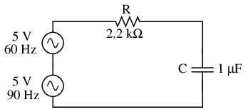
Circuito impulsado por una combinación de frecuencias: 60 Hz y 90 Hz.
Circuito de análisis solo para fuente de 60 Hz:
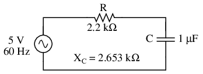
Circuito para resolver 60 Hz.
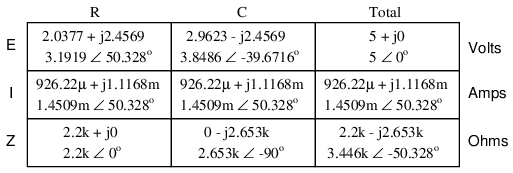
Analizando el circuito solo para fuente de 90 Hz:
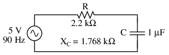
Circuito de resolución de 90 Hz.
Superponiendo las caídas de voltaje en R y C, obtenemos:
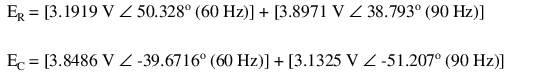
Debido a que los dos voltajes en cada componente están a diferentes frecuencias, no podemos consolidarlos en una sola cifra de voltaje como lo haríamos si estuviéramos sumando dos voltajes de diferente amplitud y/o ángulo de fase a la misma frecuencia. La notación de números complejos nos brinda la capacidad de representar la amplitud de la forma de onda (magnitud polar) y el ángulo de fase (ángulo polar), pero no la frecuencia.
Lo que podemos decir de esta aplicación del teorema de superposición es que habrá una caída de voltaje de 60 Hz mayor a través del capacitor que un voltaje de 90 Hz. Todo lo contrario ocurre con la caída de voltaje de la resistencia. Vale la pena señalar esto, especialmente a la luz del hecho de que los dos voltajes de fuente son iguales. Este tipo de respuesta desigual del circuito a señales de diferente frecuencia será nuestro enfoque específico en el próximo capítulo.
También podemos aplicar el teorema de superposición al análisis de un circuito alimentado por un voltaje no sinusoidal, como una onda cuadrada. Si conocemos la serie de Fourier (equivalente a múltiples ondas seno/coseno) de esa onda, podemos considerar que se origina a partir de una cadena conectada en serie de múltiples fuentes de voltaje sinusoidales con las amplitudes, frecuencias y cambios de fase apropiados. No hace falta decir que esto puede ser una tarea laboriosa para algunas formas de onda (se considera que una serie de Fourier de onda cuadrada precisa se expresa hasta el noveno armónico, ¡o cinco ondas sinusoidales en total!), pero es posible. Menciono esto no para asustarlo, sino para informarle sobre la complejidad potencial que se esconde detrás de formas de onda aparentemente simples. Un circuito de la vida real responderá de la misma manera al ser alimentado por una onda cuadrada que si lo fuera por unainfinitoSerie de ondas sinusoidales de frecuencias impares-múltiples y amplitudes decrecientes. Se sabe que esto se traduce en resonancias inesperadas en los circuitos, sobrecalentamiento del núcleo del transformador y del inductor debido a corrientes parásitas, ruido electromagnético en amplios rangos del espectro de frecuencia y similares. Es necesario concienciar a los técnicos e ingenieros de los efectos potenciales de las formas de onda no sinusoidales en los circuitos reactivos.
Se sabe que los armónicos también manifiestan sus efectos en forma de radiación electromagnética. Se han realizado estudios sobre los peligros potenciales del uso de computadoras portátiles a bordo de aviones de pasajeros, citando el hecho de que las señales de voltaje de "reloj" de onda cuadrada de alta frecuencia de las computadoras son capaces de generar ondas de radio que podrían interferir con el funcionamiento del equipo electrónico de navegación de la aeronave. Ya es bastante malo que las frecuencias típicas de las señales de reloj de microprocesadores estén dentro del rango de las bandas de radiofrecuencia de los aviones, pero peor aún es el hecho de que los múltiplos armónicos de esas frecuencias fundamentales abarcan un rango aún mayor, debido al hecho de que los voltajes de las señales de reloj tienen forma de onda cuadrada y no de onda sinusoidal.
Las “emisiones” electromagnéticas de esta naturaleza también pueden ser un problema en aplicaciones industriales, donde abundan los armónicos en cantidades muy grandes debido al control electrónico (no lineal) de la potencia del motor y del horno eléctrico. La frecuencia fundamental de la línea eléctrica puede ser solo de 60 Hz, pero esos múltiplos de frecuencia armónica teóricamente se extienden a rangos de frecuencia infinitamente altos. El voltaje y la corriente de la línea eléctrica de baja frecuencia no se irradian al espacio tan bien como la energía electromagnética, pero las altas frecuencias sí.
Además, el “acoplamiento” capacitivo e inductivo causado por conductores cercanos suele ser más severo a altas frecuencias. El cableado de señal cercano al cableado de alimentación tenderá a “captar” interferencias armónicas del cableado de alimentación en mucha mayor medida que la interferencia de onda sinusoidal pura. Este problema puede manifestarse en la industria cuando los viejos controles de motores se reemplazan por nuevos controles electrónicos de estado sólido que brindan mayor eficiencia energética. De repente, puede haber un ruido eléctrico extraño impreso en el cableado de señales que nunca solía estar allí, porque los controles antiguos nunca generaron armónicos, y esos voltajes y corrientes armónicos de alta frecuencia tienden a “acoplarse” inductivamente y capacitivamente mejor a los conductores cercanos que cualquier señal de 60 Hz de los controles antiguos.
- REVISAR:
- Cualquier forma de onda regular (repetitiva) no sinusoidal es equivalente a una serie particular de ondas seno/coseno de diferentes frecuencias, fases y amplitudes, más un voltaje de compensación de CC si es necesario. El proceso matemático para determinar el equivalente de forma de onda sinusoidal para cualquier forma de onda se llamaanálisis de Fourier.
- Se pueden simular fuentes de voltaje de frecuencia múltiple para su análisis conectando varias fuentes de voltaje de frecuencia única en serie. El análisis de voltajes y corrientes se logra utilizando el teorema de superposición. NOTA: tensiones y corrientes superpuestas de diferentes frecuenciasno puedosumarse en forma de números complejos, ya que los números complejos sólo tienen en cuenta la amplitud y el cambio de fase, ¡no la frecuencia!
- Los armónicos pueden causar problemas al generar señales de voltaje no deseadas (“ruido”) en los circuitos cercanos. Estas señales no deseadas pueden provenir de acoplamiento capacitivo, acoplamiento inductivo, radiación electromagnética o una combinación de los mismos.
Contributors
Los contribuyentes a este capítulo se enumeran en orden cronológico de sus contribuciones, desde el más reciente hasta el primero. Consulte el Apéndice 2 (Lista de colaboradores) para fechas e información de contacto.
Jason Stark(Junio de 2000): Formato de documentos HTML, que dio lugar a una segunda edición mucho más atractiva.
Lecciones en circuitos eléctricoscopyright (C) 2000-2023 Tony R. Kuphaldt, según los términos y condiciones delCC BY License.